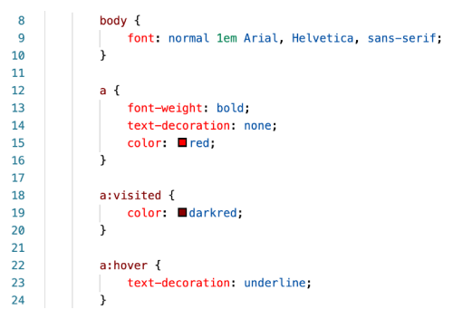
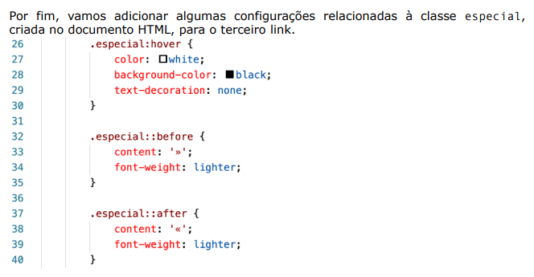

Para começar a dar mais poder às CSS, criando estilos personalizados, precisamos aprender a utilizar os seletores de id(#) e de class(.) de maneira eficiente. Ao criar nosso conteúdo em HTML, podemos identificar um determinado elemento único com um id, ou agrupar elementos múltiplos que tenham características semelhantes com um class.
Lembre-se: id só pode ser usado em um elemento ÚNICO e a class pode ser usada em MAIS de um elemento.
Para identificar uma tag com id em HTML, basta adicionar id="nomedoid" antes de fechar a tag, exemplo: <h1 id="titulo">...</h1>
Dentro da tag style ou dentro do arquivo .CSS, você vai personalizar o id colocando uma hashtag e o nome do id, por exemplo:
#principal{
...
}
Dentro da tag style ou dentro do arquivo .CSS, você vai personalizar o id colocando um ponto (.) e o nome da class, por exemplo:
.elementos{
...
}
Uma pseudo-classe CSS é uma palavra-chave adicionada às declarações de um seletor após um sinal de dois pontos e especificam um estado especial de um elemento. Existem várias pseudo-classes para estilos, podemos citar :hover, :visited, :active, :checked, :empty e :focus
exemplo:
Já um pseudo-elemento CSS é uma palavra-chave adicionada às declarações de um seletor após dois sinais de dois pontos e permitem que você formate um pedaço específico do elemento referenciado. Os principais pseudo-elementos usados nas CSS são ::before, ::after, ::first-letter, ::first-line
exemplo:
